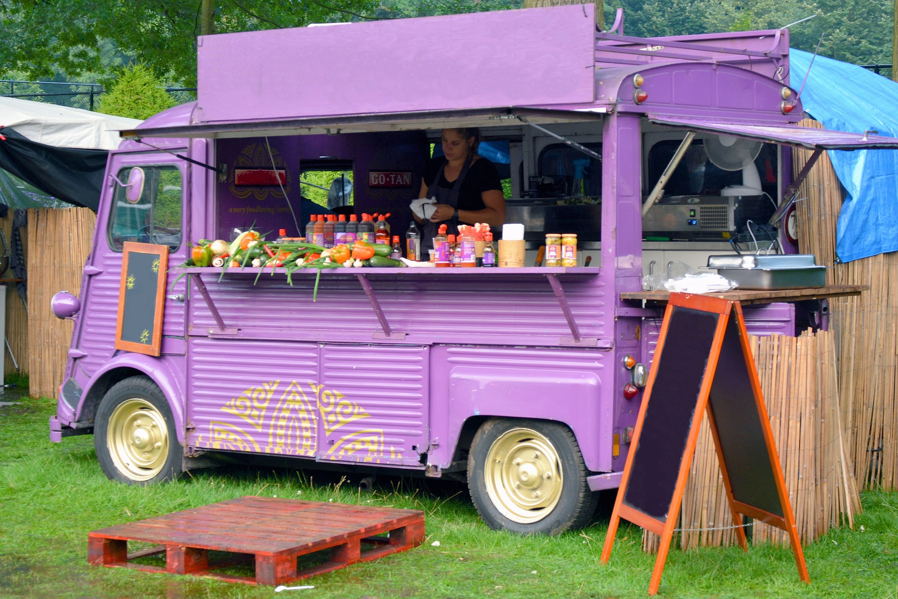
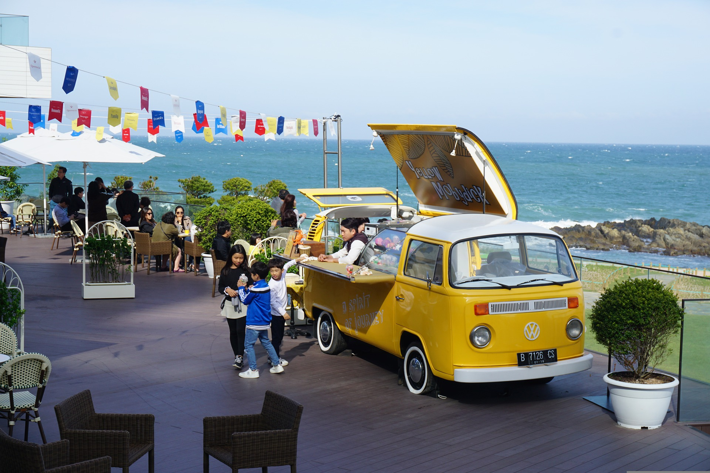
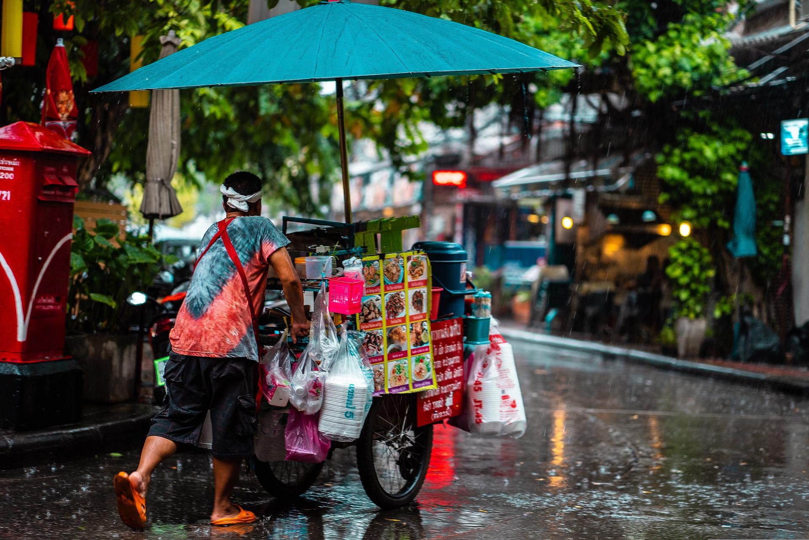
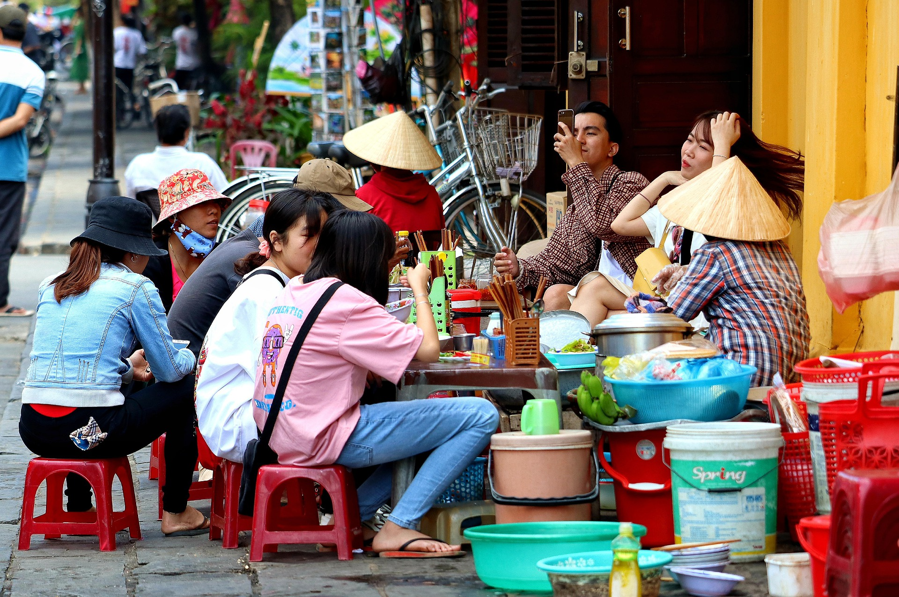

푸드트럭이란
푸드트럭은 음식을 조리하고 판매 할 수 있는 대형 차량이다. 냉동되거나 미리 포장 된 음식을 판매하는
푸드 트럭도 있는 반면, 원재료만 가지고 직접 그 자리에서 조리하는 형태 등 다양한 형태의 푸드트럭이 있다.
푸트트럭 이미지

푸드트럭의 개요
말 그대로 작은 트럭을 주방처럼 개조해서 포장마차형 음식점을 운영하는 것. 성룡 주연의 영화 쾌찬차를 보면 1980년대 옛날 영화임에도......
Go somewhere


푸드트럭의 역사
미국에서의 푸드트럭의 역사는 꽤 오래되었는데, 1860~1880년대까지 조그만 마차나 손수레를 개조해서 샌드위치나 고기 요리 같은......
Go somewhere

푸드트럭의 매력
푸드트럭의 장점은 레스토랑이나 여타 음식점 설립 비용에 비해 트럭을 마련·개조하고 요리 도구와 식재료를 구비하는 과정에서 드는......